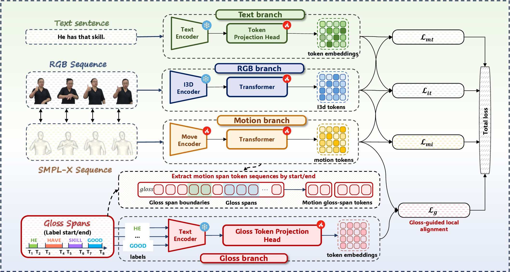
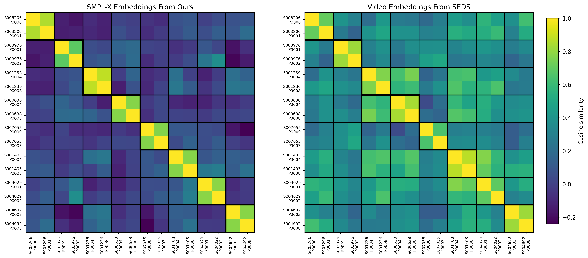
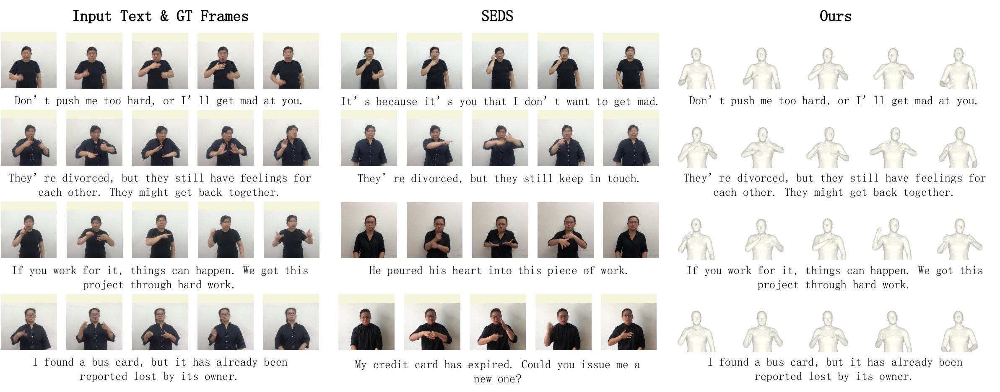
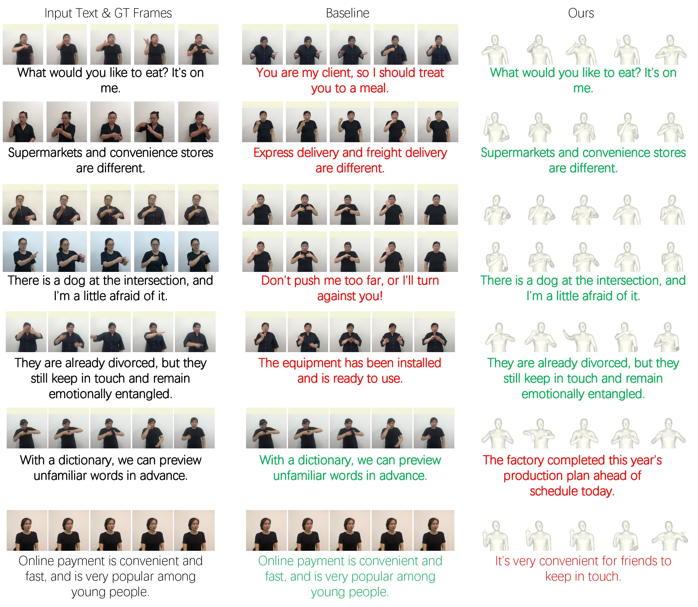

Align sign language to text in motion space, not pixel space
Sign language–text alignment remains a fundamental challenge for text-driven sign language understanding. Existing methods predominantly rely on appearance-heavy RGB representations, which entangle motion semantics with visual variations and lead to ambiguous motion–language grounding.
We reformulate sign language–text alignment in a structured kinematic space and propose a kinematics-centric framework that adopts 3D motion parameterized by SMPL-X as the primary representation. To capture the compositional nature of sign language, we introduce a gloss-guided local alignment mechanism that uses automatically estimated gloss temporal spans to decompose continuous motion into coherent segments and establish fine-grained motion–text correspondences. We further develop a visual distillation strategy in which RGB serves as privileged supervision during training only; retrieval uses SMPL-X motion and text alone.
Our method achieves state-of-the-art bidirectional retrieval on CSL-Daily and competitive results on PHOENIX-2014T.
Kinematic representation
Upper-body, hand and facial-expression SMPL-X parameters replace RGB as the retrieval modality: appearance-free, signer-invariant, and reusable for avatars and robotics.
Gloss-guided local alignment
Gloss spans slice motion tokens into segments that are contrasted against gloss embeddings in both directions.
RGB as privileged supervision
An I3D branch aligns with text and distills visual context into the motion branch, then is dropped at retrieval time.
Four branches for training, two for retrieval
A Movement Encoder (temporal convolution, 4× downsampling) and a Transformer turn the SMPL-X sequence into motion tokens. LaBSE token embeddings represent the sentence and each gloss. Only the text and motion branches are used at retrieval time.
- Lmt motion ↔ text
- The retrieval objective itself: a bidirectional InfoNCE that pulls each motion sequence toward its own sentence and away from the other sentences in the batch.
- Lg motion span ↔ gloss
- The same contrastive idea one level down: every gloss-bounded motion segment is matched against every gloss of the sample, in both directions, so local semantics are grounded in time.
- Lit RGB ↔ text
- Keeps the auxiliary RGB branch semantically meaningful, so that what it passes to the motion branch is sentence-relevant rather than arbitrary visual detail.
- Lmi motion ↔ RGB
- The distillation term: motion tokens are aligned with RGB tokens of the same sample, which transfers visual context into the motion representation during training.
The four terms are summed with equal weights, all set to 1.

Contrast every motion span against every gloss
Each cell is the late-interaction similarity Skj between motion span k and gloss j. Click a row or column to see its softmax at the temperature used in the paper, τ = 0.07. The diagonal holds the correct pairs, and InfoNCE pushes their probability toward 1.
The similarity values here are illustrative, not taken from the trained model.
State of the art on CSL-Daily, using motion alone at retrieval
Full table
SMPL-X embeddings group by meaning, not by signer
On the CSL-Daily test split, we compare sign-side embeddings from the SEDS RGB branch with those from our SMPL-X branch. The same sentence signed by different people should look alike, and different sentences from the same signer should not.
Mean cosine similarity
Take the extra signers away, and RGB loses more
Training on one video per sentence costs the RGB baseline 11.0 R@1 but costs us 9.1, so less of our accuracy was resting on seeing the same sentence signed by several people.
CSL-Daily, with the test set unchanged. Full numbers: SEDS 78.4 → 67.4 (T2V), ours 87.1 → 78.0.

Gloss-guided alignment carries the most weight
Component ablation, R@1
Perturbations, T2M R@1
SMPL-X noise σ = 0.1 (≈50% of the per-dimension std). Span shift: start and end moved 0–4 frames (mean gloss ≈ 8 frames).
Why PHOENIX-2014T trails. Recovering SMPL-X from broadcast weather footage is noisier: median acceleration jitter is 2.43 vs. 1.47 on CSL-Daily. The worst-jitter quartile of the PHOENIX test set scores about 8–10 R@1 points below the cleaner quartiles, so kinematics-centric retrieval depends on the quality of upstream motion recovery.
Where kinematics wins, and where it slips

